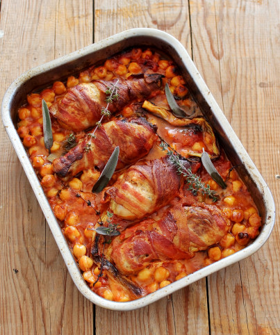
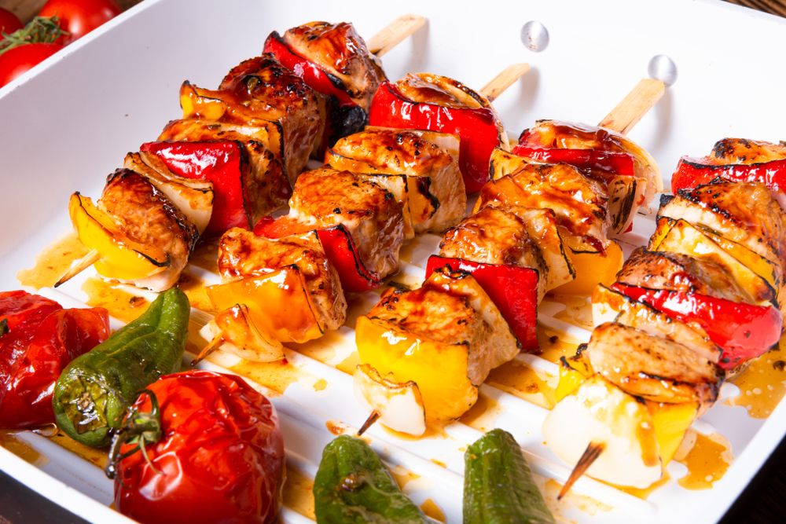

-
Indonéz pirított tészta wokban
 Hozzávalók:
Hozzávalók:- 1 csomag Tészta
- 2 ek wokolaj
- 0.5 tk Chilikrém
- 30 dkg csirke
- 20 dkg koktél garnéla
- 35 dkg ázsiai wok zöldség
- 2 szál újhagyma
- 15 dkg kínai kel
- 15 dkg brokkoli
- 2 gerezd fokhagyma
- késhegynyi aprítot chilli
- 2 tk Gyömbér
- 5 ek szójaszósz
- 2 ek koriander
Elkészítési idő:30 percAdag:4Elkészítés:A tésztát sós vízben megfőzzük 4-5 perc alatt, leszűrjük, átöblítjük, és lecsepegtetjük. A csirkehúst falatnyi kockákra daraboljuk. A hagymát, a kínai kelt és a brokkolit megmossuk, majd felcsíkozzuk. A fokhagymagerezdeket megtisztítjuk és felaprítjuk.
A Shan'shi wokolajat felforrósított wokba öntjük, és megsütjüka húst. Hozzákeverjük a csilit és a gyömbért. Hozzáadjuk a wokzöldséget a maradék zöldséggel együtt, és állandó keverés mellett megsütjük. A wok tartalmát kihúzzuk a wok edény szélére, és megsütjük a garnélát.
Szójaszósszal és Shan’shi Sambal Oelek csilikrémmel fűszerezzük. Hozzáadjuk a Shan’shi tojásos tésztát, és összekeverjük. Rövid sütés után korianderrel megszórva tálaljuk
-
Csicseriborsós-paradicsomos csirkecombHozzávalók:
- 1 üveg csicseriborsó
- 4 csirkecomb
- Só ízlés szerint
- Bors ízlés szerint
- 2 ek olívaolaj
- 8 szelet bacon
- 1 csok újhagyma
- 2 gerezd fokhagyma
- 1 paradicsom
- 1 mk cukor
- 1 mk zsálya
- Kakukkfű ízlés szerint
- 1 db babérlevél
- 1 dl víz
Elkészítési idő:90 percAdag:4Elkészítés:A csicseriborsót egy szűrűbe tesszük, és alaposan lecsepegtetjük. (Én hideg vízzel is leöblítettem, majd hagytam lecsepegni.)
A combokat sózzuk, borsozzuk, és legalább egy fél órát hagyjuk állni, hogy az ízek átjárják. Az olajat felhevítjük, belehelyezzük az előzőleg befűszerezett combokat, és pár perc alatt, közben többször átfordítva, körbepirítjuk, majd kiszedjük a zsiradékból és félretesszük.
Ezután a langyosra hűlt combokat körbetekerjük a baconnel. A visszamaradt zsiradékba beletesszük az újhagymát, kicsit megfonnyasszuk, majd hozzáadjuk a zúzott fokhagymát, ráöntjük a paradicsomot és a csicseriborsót. Ezután sózzuk, borsozzuk, megszórjuk a cukorral, hozzáadjuk a zöldfűszereket, felöntjük a vízzel, majd összekeverjük, és forráspontig melegítjük.
Egy tepsibe (v. sütőtálba) átöntjük a paradicsomos csicseriborsót, majd ráhelyezzük a baconbe tekert csirkecombokat. Előmelegített sütőbe tesszük, majd közepes hőmérsékleten kb. 45 perc alatt szép pirosra sütjük. (Én légkeverésnél 170 fokon, 40 percig sütöttem.)
-
Sertés saslik paprikávalHozzávalók:
- 2 gerezd fokhagyma
- 2 ek olívaolaj
- 1/4 tk chili
- 2 tk fűszerpaprika
- só
- bors
- 60 dkg sertéskaraj
- 3db tv paprika
- 3db kápia paprika
Elkészítési idő:60 percAdag:6Elkészítés:A páchoz az összezúzott fokhagymát egy tálban összekeverjük az olajjal, a csiliporral, a fűszerpaprikával, a sóval és a borssal. A húst kisebb kockákra vágjuk, beleforgatjuk a pácba, majd lefedve egy órára a hűtőbe tesszük.
A paprikákat kisebb szeletekre vágjuk és a pácból kivett hússal felváltva saslikpálcikára húzzuk. Forró serpenyőben, vagy előmelegített sütőben, vagy grillen megsütjük.
-
Barnasörös marharagu
 Hozzávalók:
Hozzávalók:- 1 fej vöröshagyma
- 3 ek olívaolaj
- 3 gerezd fokhagyma
- 2 ág zeller
- 2 db közepes sárgarépa
- 50 dkg marhalábszár
- 1 ek liszt
- 1 doboz barnasör
- 1 doboz paradicsom konzerv
- 2 tk barna cukor
- só
- bors
- 3 db babérlevél
- 2 ág kakukkfű
Elkészítési idő:90+ percAdag:4Elkészítés:A barnasörös marharagu elkészítéséhez egy öntöttvas lábasban felhevítjük az olívaolajat, és kevergetve megpirítjukk benne a meghámozott és felaprított zöldségeket. Hozzáadjuk a megtisztított, 2 cm-es kockákra vágott húst, megszórjuk a liszttel, és elkeverjük.
Hozzáöntjük a barna sör felét, a konzerv paradicsomot a levével együtt, megszórjuk a barna cukorral, ízlés szerint sózzuk és borsozzuk, majd beleforgatjuk a babérlevelet és a kakukkfüvet.
Felforraljuk a ragut, majd kis lángon, lefedve legalább 2 órán át főzzük, amíg a hús omlósra puhul, és a ragu besűrűsödik. Közben néhányszor átkeverjük, és a maradék sörrel pótoljuk az elfőtt folyadékot. Tálalás előtt kivesszük belőle a babérleveleket és a kakukkfű szárakat. Bármilyen burgonyaköret jól illik a marharaguhoz.
-
Aranydurbincs filé corn flakes bundában
 Hozzávalók:
Hozzávalók:- 4 db aranydurbincs filé
- 2 ek kukoricaliszt
- 2 db tojás
- 5 marék corn flakes
- só
- őrölt színes bors
- 1 tk halfűszerkeverék
- 0.5 citrom leve
- 1 dl olívaolaj
Elkészítési idő:45 percAdag:2Elkészítés:Két egyforma nagyságú aranydurbincsból éles késsel levágunk egy-két filét, ízlés szerint sózzuk, borsozzuk, megszórjuk a halfűszerkeverékkel, rácsorgatjuk a citromlevet, és legalább egy fél órát állni hagyjuk, hogy az ízek jól átjárják a halhúst. Egy tálcára terítjük a kukoricapelyhet, majd kissé összemorzsoljuk (arra azért figyeljünk, hogy ne legyen túl morzsalékos).
Egy tányérba belekanalazzuk a kukoricalisztet, egy másik tányérba felütjük a tojásokat, hozzáadunk egy csipet sót, és villával alaposan összekeverjük. A befűszerezett halfilét először beleforgatjuk a kukoricalisztbe, majd a felvert tojásba, végül pedig a kukoricapehelybe.
Egy nagyobb tepsit kibélelünk sütőpapírral, majd meglocsoljuk az olívaolaj felével. Ezután ráhelyezzük a bepanírozott halfilét, majd meglocsoljuk mindegyiket a maradék olívaolajjal.
Előmelegített sütőbe helyezzük, majd közepes hőmérsékleten 15-20 perc alatt szép pirosra, ropogósra sütjük. (Én légkeverésnél 170 fokon, 15 percig sütöttem.)